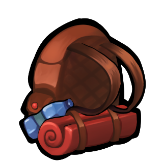

Home
Archives

🪑
请先
登录
，才能召开 AI 圆桌会议。
🪑 AI 圆桌会议
demo
抛出一个议题，让 Madeline、Theo、Granny、Badeline 和 Oshiro 围坐讨论，你来插话——散场时，众人会按这场讨论的成色端出一盘「成果派」。
🔴 全站正在讨论
点卡片以观察者身份旁听
今天想讨论什么议题？
自动讨论至众人形成共识，可随时结束
召开会议
出席席位：
推荐话题
根据你的日记、文章和点赞生成，点卡片直接开会
换一批
正在为你挑选话题…
📜 历史会议（本机记录）
还没有会议记录。
📜 历史记录
✋ 转为参与
结束会议
插话
🎯 共识雷达
等待讨论展开…
🤝 正在形成的共识
⚔️ 仍然存在的分歧
席位
现场
共识
📜 会议逐字稿
✕
 推荐话题
根据你的日记、文章和点赞生成，点卡片直接开会
推荐话题
根据你的日记、文章和点赞生成，点卡片直接开会